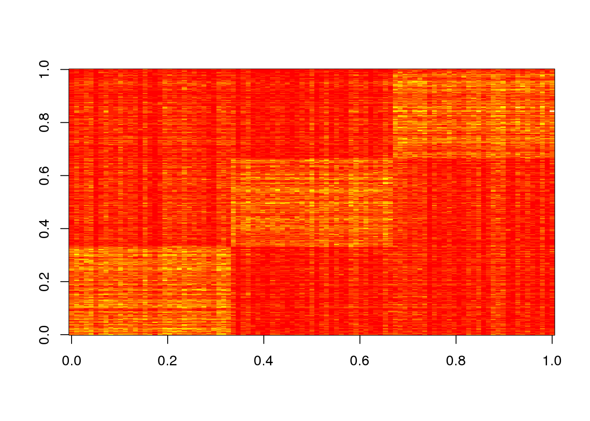
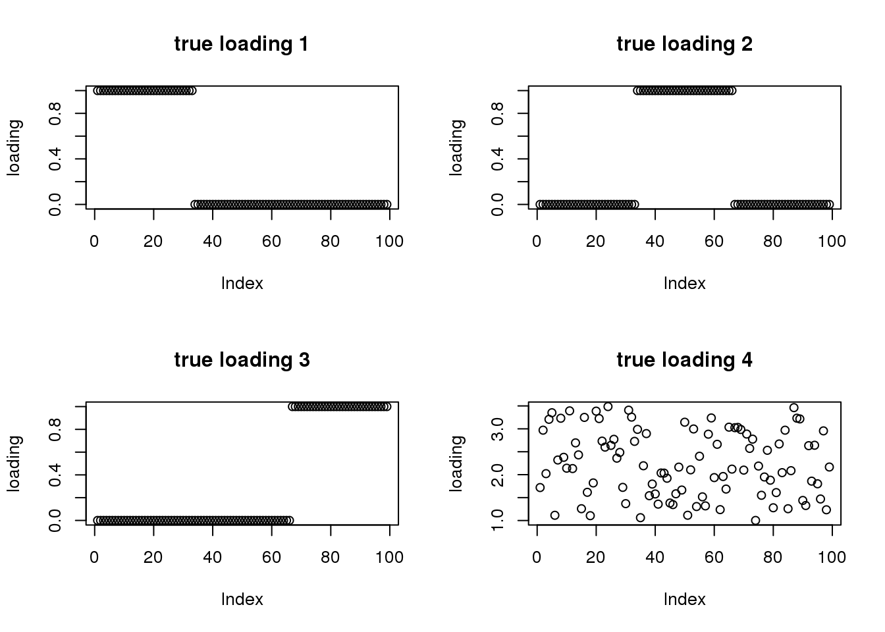
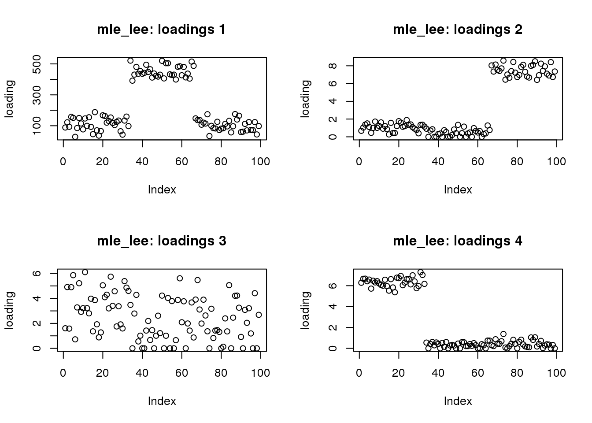
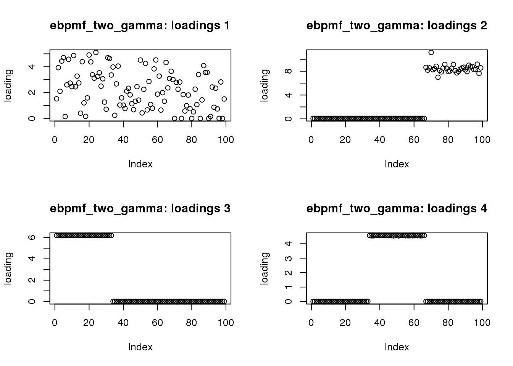
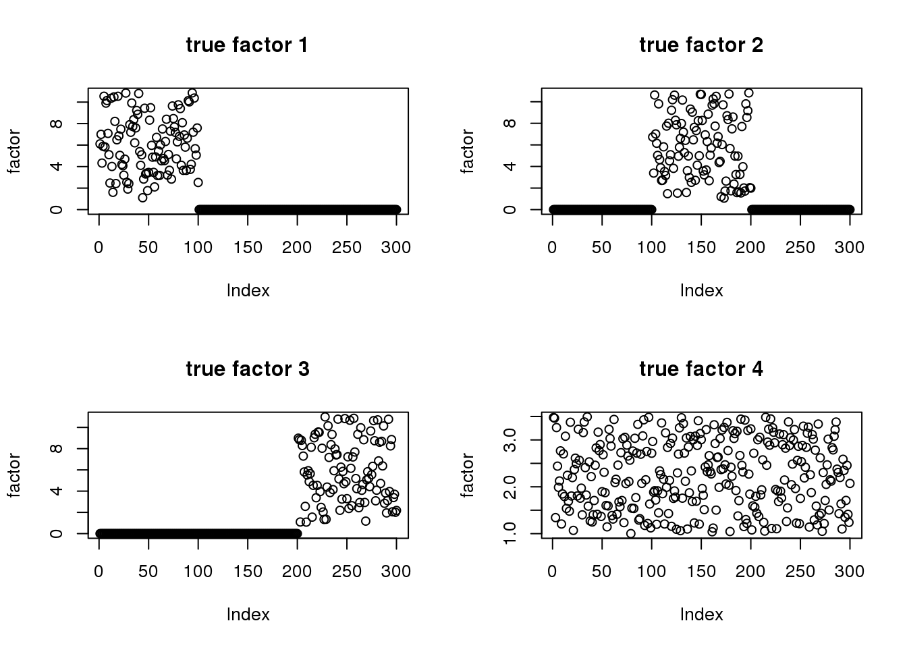
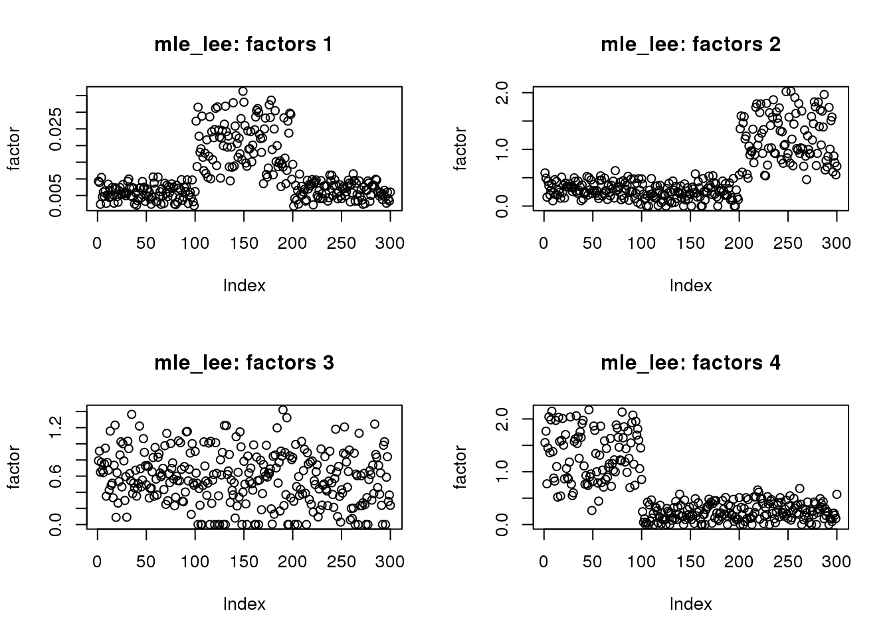
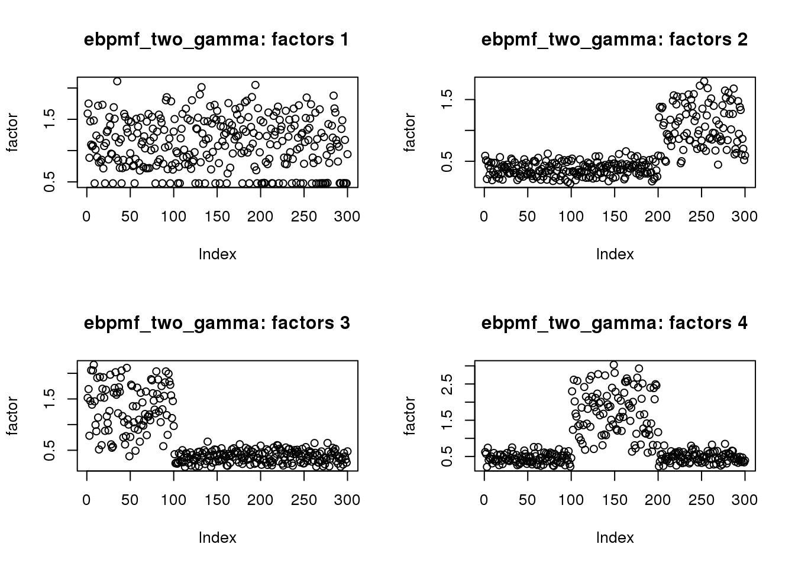

Last updated: 2020-01-21
workflowr checks: (Click a bullet for more information) ✔ R Markdown file: up-to-date
Great! Since the R Markdown file has been committed to the Git repository, you know the exact version of the code that produced these results.
✔ Environment: empty
Great job! The global environment was empty. Objects defined in the global environment can affect the analysis in your R Markdown file in unknown ways. For reproduciblity it’s best to always run the code in an empty environment.
✔ Seed:
set.seed(20190923)
The command set.seed(20190923) was run prior to running the code in the R Markdown file. Setting a seed ensures that any results that rely on randomness, e.g. subsampling or permutations, are reproducible.
✔ Session information: recorded
Great job! Recording the operating system, R version, and package versions is critical for reproducibility.
✔ Repository version: 8ad3bd7
wflow_publish or wflow_git_commit). workflowr only checks the R Markdown file, but you know if there are other scripts or data files that it depends on. Below is the status of the Git repository when the results were generated:
Ignored files:
Ignored: .Rhistory
Ignored: .Rproj.user/
Ignored: analysis/demo_sparse_ebpmf_two_gamma_cache/
The goal is to simulate data with sparse factors and loadings, and see which method can recover them. I compare our method ebpmf_two_gamma with MLE (using lee’s multiplicative update) for Poisson Matrix Factorization.
rm(list = ls())
library("NNLM")
library("ebpm")
library("ebpmf")
source("code/misc.R")Let \(\Lambda = \sum_{k = 1}^4 l_{ik} f_{jk}\) be the underlying mean. The first 3 loadings & factors have a “block-like” structure. The 4th loading and factor are noise.
set.seed(123)
n = 99
p = 300
k= 4
mfac = 2.5 # controls PVE of dense factor
L = matrix(0, nrow=n, ncol=k)
F = matrix(0, nrow=p, ncol=k)
L[1:(n/3),1] = 1
L[((n/3)+1):(2*n/3),2] = 1
L[((2*n/3)+1):n,3] = 1
L[,4] = 1+mfac*runif(n)
F[1:(p/3),1] = 1+10*runif(p/3)
F[((p/3)+1):(2*p/3),2] = 1+10*runif(p/3)
F[((2*p/3)+1):p,3] = 1+10*runif(p/3)
F[,4]= 1+mfac*runif(p)
lambda = L %*% t(F)
X = matrix(rpois(n=length(lambda),lambda),nrow=n)I fit with ebpmf_two_gamma and MLE. Assume the true number of topics is known.
MLE uses EM algorithm so I use 10000 iterations so that it is close to convergence.
For ebpmf_two_gamma I find 500 iterations are good enough.
k = 4
fit_lee = NNLM::nnmf(A = X, k = k, loss = "mkl", method = "lee", max.iter = 10000, verbose = FALSE)
fit_ebpmf_tg = ebpmf.alpha::ebpmf_two_gamma(X, K = k, maxiter.out = 500, verbose = FALSE)I show the matrix X
image(X)
## show scaled L, F
## I transfrom the L, F from the Poisson model to the multinomial model
# lf_truth = poisson2multinom(F = F, L = L)
# par(mfrow = c(2,2))
# for(i in 1:k){
# plot(lf_truth$L[,i],main=paste0("true loading (scaled)",i), ylab = "loading")
# }
# par(mfrow = c(2,2))
# for(i in 1:k){
# plot(lf_truth$F[,i],main=paste0("true factor (scaled)",i), ylab = "factor")
# }## show true L
par(mfrow = c(2,2))
for(i in 1:k){
plot(L[,i],main=paste0("true loading ",i), ylab = "loading")
}
## lee from truth
par(mfrow = c(2,2))
for(i in 1:k){
plot(fit_lee$W[,i],main=paste0("mle_lee: loadings ",i), ylab = "loading")
}
## ebpmf_tg
par(mfrow = c(2,2))
for(d in 1:k){
plot(fit_ebpmf_tg$qg$qls_mean[,d],main=sprintf("ebpmf_two_gamma: loadings %d", d), ylab = "loading")
} * MLE solution does not get sparse loadings, though the basic structure is right.
## show true F
par(mfrow = c(2,2))
for(i in 1:k){
plot(F[,i],main=paste0("true factor ",i), ylab = "factor")
}
## lee from truth
par(mfrow = c(2,2))
for(i in 1:k){
plot(fit_lee$H[i,],main=paste0("mle_lee: factors ",i), ylab = "factor")
}
## ebpmf_tg
par(mfrow = c(2,2))
for(d in 1:k){
plot(fit_ebpmf_tg$qg$qfs_mean[,d],main=sprintf("ebpmf_two_gamma: factors %d", d), ylab = "factor")
}
Both methods get the basic structure, but fails to get the sparse solutions.
Factors are harder to recover for the ebpmf_two_gamma in this example, because the randomness in the signal makes the ebpm subproblem harder to solve (difficult to identify clusters).
sessionInfo()R version 3.5.1 (2018-07-02)
Platform: x86_64-pc-linux-gnu (64-bit)
Running under: Scientific Linux 7.4 (Nitrogen)
Matrix products: default
BLAS/LAPACK: /software/openblas-0.2.19-el7-x86_64/lib/libopenblas_haswellp-r0.2.19.so
locale:
[1] LC_CTYPE=en_US.UTF-8 LC_NUMERIC=C
[3] LC_TIME=en_US.UTF-8 LC_COLLATE=en_US.UTF-8
[5] LC_MONETARY=en_US.UTF-8 LC_MESSAGES=en_US.UTF-8
[7] LC_PAPER=en_US.UTF-8 LC_NAME=C
[9] LC_ADDRESS=C LC_TELEPHONE=C
[11] LC_MEASUREMENT=en_US.UTF-8 LC_IDENTIFICATION=C
attached base packages:
[1] stats graphics grDevices utils datasets methods base
other attached packages:
[1] ebpmf_0.1.0 ebpm_0.0.0.9011 NNLM_0.4.2
loaded via a namespace (and not attached):
[1] workflowr_1.1.1 Rcpp_1.0.2 gtools_3.8.1
[4] digest_0.6.22 rprojroot_1.3-2 R.methodsS3_1.7.1
[7] backports_1.1.5 magrittr_1.5 git2r_0.26.1
[10] evaluate_0.14 stringi_1.4.3 whisker_0.4
[13] R.oo_1.22.0 R.utils_2.7.0 rmarkdown_1.10
[16] tools_3.5.1 stringr_1.4.0 mixsqp_0.2-2
[19] yaml_2.2.0 compiler_3.5.1 htmltools_0.3.6
[22] knitr_1.20 This reproducible R Markdown analysis was created with workflowr 1.1.1